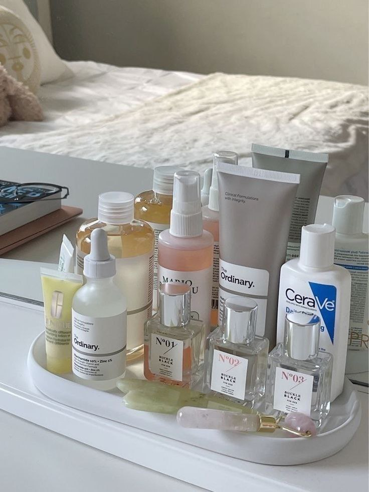

What are in Well known Skincare Ingredients?

- Azelaic Acid
What it does: Produced by a naturally occurring yeast on skin, this exfoliating ingredient reduces hyperpigmentation, fades dark spots, and kills acne- and rosacea-causing bacteria.
Who it's for: All skin types, but particularly acne-prone skin.
How to use it: Twice a day (morning and night) or once every other day for sensitive skin.
FYI: Start slow — azelaic acid may cause drying or peeling on application sites.
- Beta-Hydroxy Acids (BHAs)
What it does: BHAs are oil-soluble acids that plunge deep into pores to target oil glands and decrease oil secretion
Who it's for: Acne-prone and oily skin, since it decreases oil secretion and nixes dead skin to prevent pimples.
How to use it: Begin with twice-weekly use at a low concentration, and increase potency and frequency as tolerated.
FYI: While it's a star on oily skin, it may cause flaking at first, particularly on dry or sensitive skin.
- Polyhydroxy Acid
What it does: A gentle chemical exfoliant, polyhydroxy acid (PHA) sloughs dead skin cells away from the surface for a smoother and more even texture.
Who it’s for: Milder, less irritating and more hydrating than exfoliant cousins AHA and BHA, PHA doesn’t penetrate skin as deeply but still exfoliates which makes it perfect for sensitive skin, rosacea or eczema.
How to use it: PHA plays nicely with other active ingredients like vitamin C or retinol — start slow at first to prevent irritation. Most people can use PHAs three to four times a week without issue. One exception: Use once weekly if you use other acids like AHAs or BHAs.
FYI: The most common PHAs are gluconolactone, galactose and lactobionic acid.
- Salicylic Acid
What it does: A BHA best known for its exfoliating, pore-cleaning, and bacteria-fighting powers.
Who it's for: People with oily and acne-prone skin, particularly those who want to treat and prevent whiteheads and blackheads.
How to use it: Apply as a spot treatment or swap in a salicylic acid-laced face cleanser once or twice per week, increasing frequency as tolerated.
FYI: This acne-fighting powerhouse may irritate sensitive skin or parch dry skin.